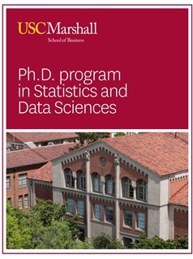

Gareth James
Home Bio Research Teaching CV Personal
|
Information on Marshall's
PhD in Statistics and Data Science Click Here To Apply for the Marshall PhD Program |
 |
Current Students
|
Brad Rava Fifth year Ph.D. Student |
Past Students
|
Siva Tian Chief Science Officer, VP of Analytics and Research Genpact |
|
Xinghao Qiao Assistant Professor London School of Economics |
|
Courtney Paulson Assistant Professor Southern Utah Univeristy |
|
|
Luella Fu Assistant Professor San Francisco State University |
|
|
Joshua Derenski Senior Data Scientist Universal Music Group |